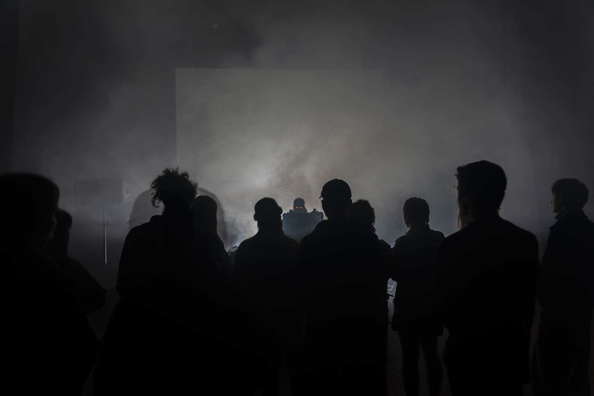
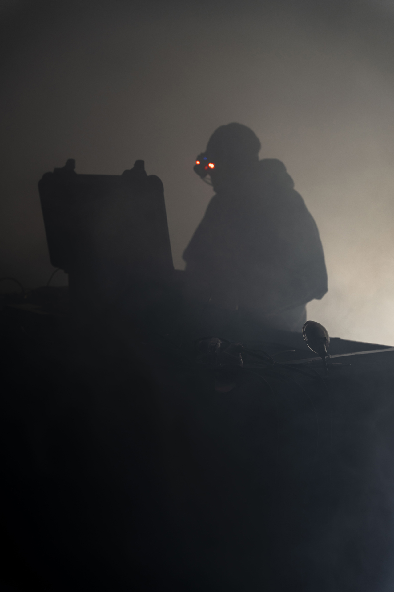
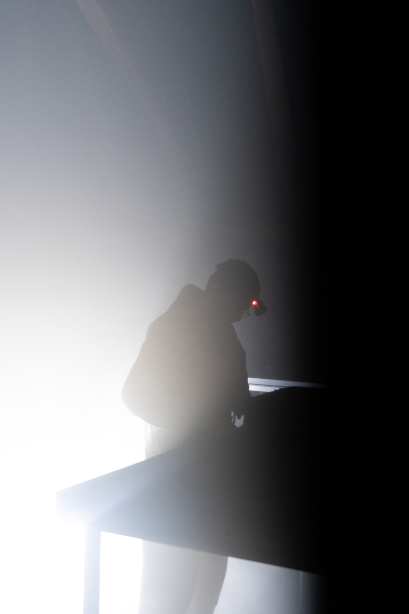
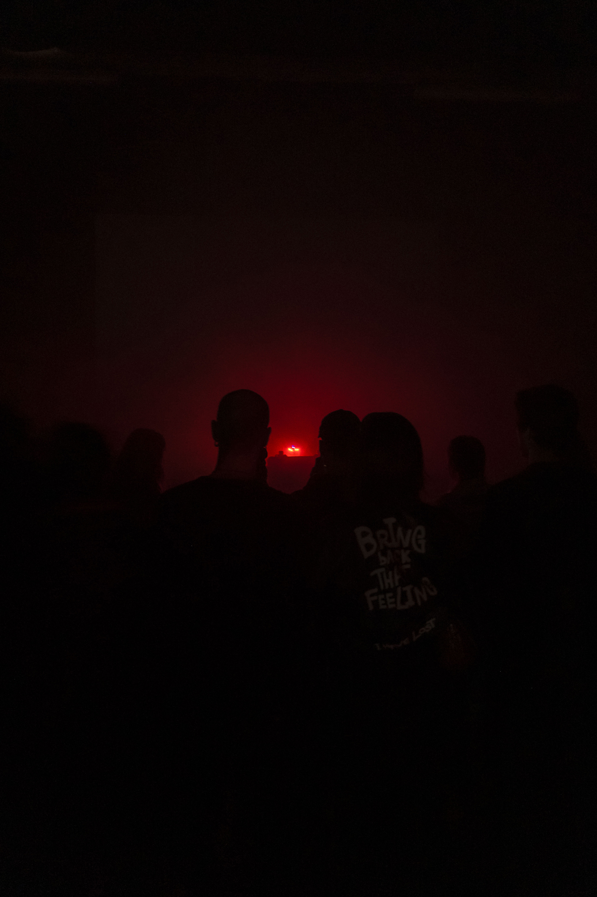
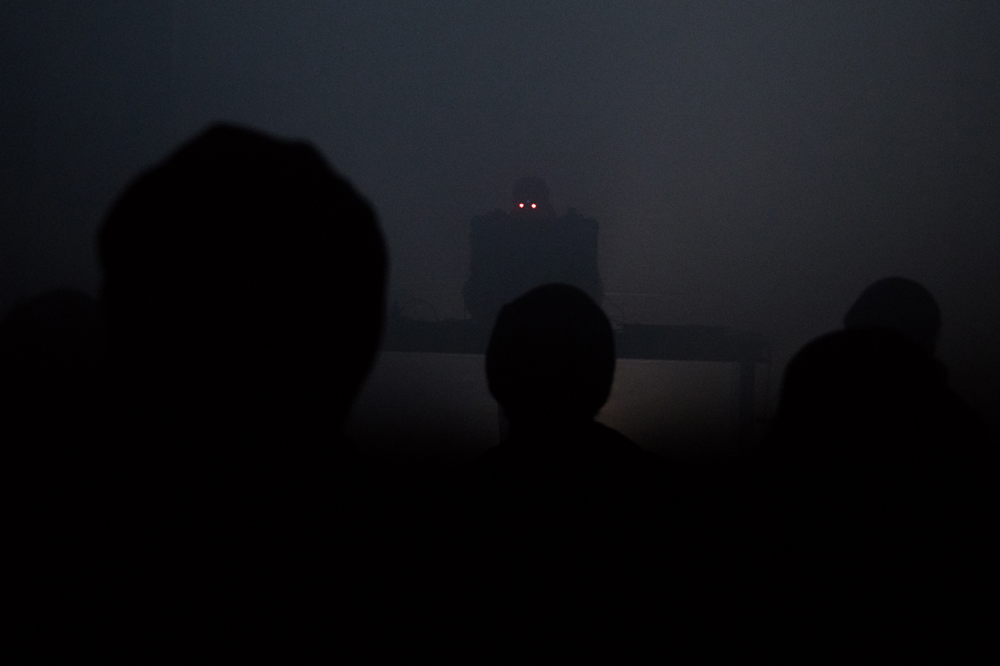

In loving memory
Holy Similaun - 2016/2026
Releases Shows Contacts Gallery
Holy Similaun was an enchanting and enigmatic musical endeavour hailing from the picturesque landscapes of Italy, emerging as a compelling force in the realm of European experimental music.
Its innovative approach to music transcended conventional boundaries, pushing the boundaries of sonic possibilities.
What truly distinguished Holy Similaun was its extraordinary ability to transport audiences into ethereal and immersive auditory landscapes.
Its compositions were not just mere songs but intricate odysseys, inviting listeners to embark on a mesmerizing journey through unexplored realms of the sonic experience.
Those who ventured into the auditory realm of Holy Similaun embarked on a captivating journey through uncharted territory, guided by the project’s unwavering commitment to defying convention and pushing the limits of musical expression.
Notably, Holy Similaun has engaged in remarkable collaborations with renowned names in the industry, such as Carhartt, Slam Jam, and Spazio Maiocchi.
It has also participated in compelling audiovisual projects, including Zoë McPherson’s SFX “XquisiteForce.AV” at the 2021 CTM Festival and Rest Now!’s remake of Die Hard’s soundtrack.
Its performances alongside contemporary artists like ABADIR, Chevel, Coby Sey, Dis Fig, Furtherset, Giant Swan, Kangding Ray, Lotic, Mana, Maxwell Sterling, MCMLXXXV, Plaid, Puce Mary, Renick Bell, Shelley Parker, Soho Rezanejad, Varg2TM and ZULI further showcase its unique musical prowess.
↳ Releases
Albums
EP/singles
Atlas (the 12th ribbon) - 2026
Atlas (there is nothing here yet) - 2025
Atlas (where the stork took its final flight) - 2025
To See Forever featuring Archipel and Andrea D'Arsiè - 2025
Radicor al flort, espert on'ill il erb, aor Raetia featuring Archipel and rouge-ah - 2024
Arcaskathel featuring Archipel - 2022
Live in Rome 2021 - 2022
Ansatz - 2021
En To Pan - 2018
Lapse (folder) with espect - 2024
Negative Space - 2021
A Lecture for Hysenis - 2021
Hegenrax - 2019
Kon-Kong with Coeden - 2018
Apt-get - 2017
Infdev/Dead Patterns - 2017
↳ Shows
2025
November 5th - Venice, IT at Villa Erizzo
April 11th – Venice, IT at Auditorium Candiani presenting “Nido” with Silvia Patron
February 10th – Treviso, IT at Spazio X – HIDE & Wetware Echo Showcase
February 7th – Milan, IT at SLIPMODE x Brief Encounters
2024
June 8th – Gdansk, PL at kolektyw gnojki
May 11th – Florence, IT at Gada
March 30th – Turin, IT at Living Room
March 29th – Verbania, IT at Mastronauta
March 28th – Milan, IT at C3
March 24th – Rimini, IT at Lampi Fest
March 23rd – Macerata, IT at Expanded Visions Festival
March 13th – Modena, IT at Outer Festival
March 3rd – Secret show, IT
2023
December 20th – Trento, IT at Le Garage Lab
December 9th – Olomouc, CZ at PAF with h5io6i54k
December 8th – Olomouc, CZ at PAF with h5io6i54k
November 18th – Altavalle, IT at NXS Vol.1
October 28th – Venice, IT at 100
August 12th – Gorizia, IT at Dobialab
June 23rd – Treviso, IT at Chiesa Antica di San Cipriano presenting “Nido” with Silvia Patron
June 10th – Treviso, IT at SubSculture Arts
2022
June 26th – Leipzig, DE
June 25th – Berlin, DE at Loophole
June 24th – Prague, CZ at Punctum
April 2nd – Venice, IT at Argo
2021
Nobember 19th – Padua, IT at Nadir
October 31st – Bologna, IT
September 4th – Rome, IT at PAF with h5io6i54k
June 19th – Koper, SI at NXS Vol.1
May 15th – Bored At Home
From January 19th to Februray 14th - Berlin, IT at CTM Cyberia
2020
October 3rd – Florence, IT at Manifattura Tabacchi
August 22nd – Ljubljana, SI at Festival Grounded
August 1st – Padua, IT
2019
November 20th – Rome, IT at Klang
October 9th – Bologna, IT at Ombre Lunghe
September 8th – Ravenna, IT at San Michele OFF
May 31st – Padua, IT at Je t’aime
May 11th – Milan, IT at Macao
April 13th – Treviso, IT at Dirtmor
February 9th – Berlin, DE at Acud Macht Neu with Alex Ortiga
2018
June 16th – Cervia, IT at Magma Fest
April 12th – Udine, IT at HIDE
March 3rd – Prato, IT at Phase
February 3rd – Treviso, IT at Dirtmor
January 27th – Venice, IT at Argo
2017
September 9th – Milan, IT at Macao
August 8th – Treviso, IT at PHS > Apt-Get Vol. I
April 27th – Venice, IT at Spazio Aereo
↳ Contacts
↳ Gallery






Photos by Michaela Sidorova, @yevgeniya___ & Nicola Stenico
↑